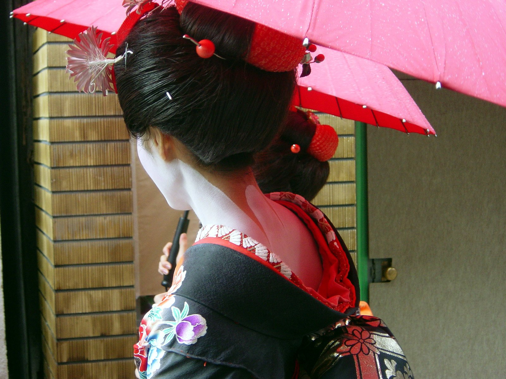
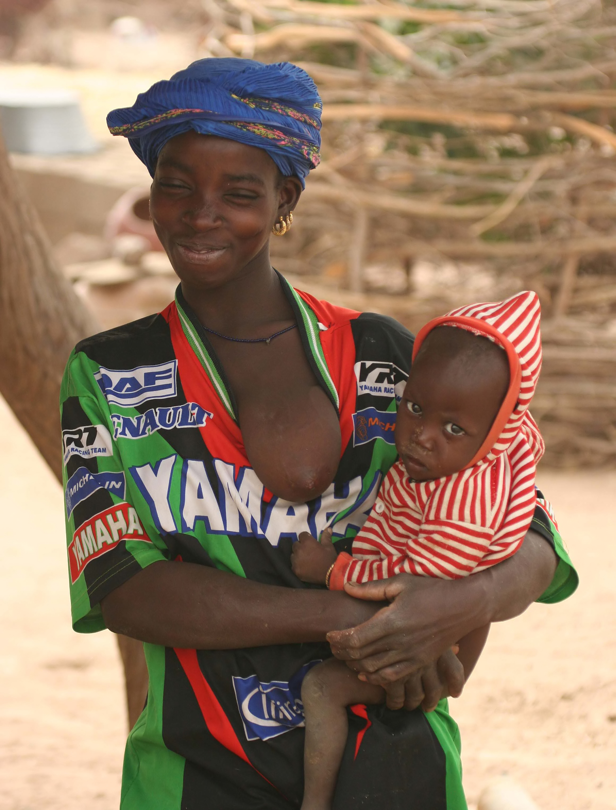

In 190 untersuchten Kulturen wurde der weiblichen Brust nur in 13 eine sexuelle Bedeutung zugeschrieben. In den restlichen 177 Kulturen ist die Brust für Männer weder sexuell attraktiv noch hat sie während des Sexualaktes irgendeine Funktion.
Im westlichen Kulturkreis scheint die primäre Aufgabe der weiblichen Brust ein männlichen Wünschen entsprechendes erotisches Attribut zu sein. Wird die Brust zum Stillen genutzt, dann – so die westliche Normvorstellung – bitte nur zur Nahrungsaufnahme und nur bei Babys im ersten Lebensjahr! Zudem soll die Brust, ob für Sex oder zum Stillen, nur im privaten Rahmen entblößt werden.
Im alten Japan galt die freie und bemalte Hals-Nacken-Partie als höchst erotisch, während die Brust durch den Kimono eng eingebunden wurde.
In Mali (Afrika) z.B. dient (zumindest in der ursprünglich lebenden Bevölkerung) die weibliche Brust einzig und allein der Ernährung und Betreuung des Kindes. Eine sexuell orientierte Berührung der Brust wird von beiden Geschlechtern entweder als komisch oder sogar abstoßend empfunden.
